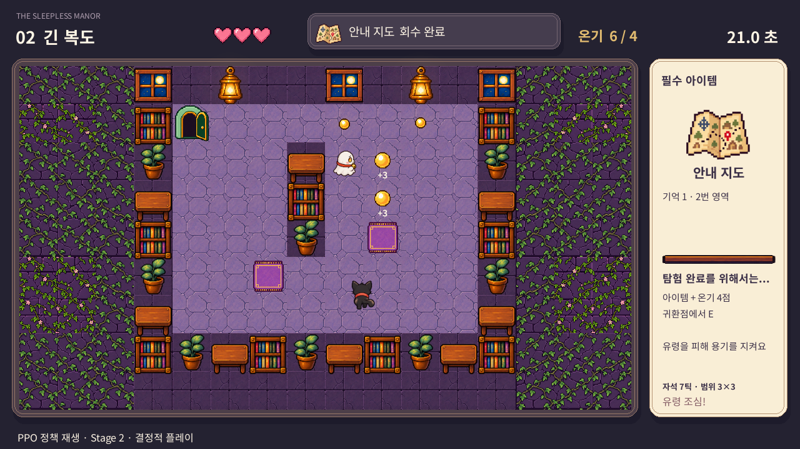
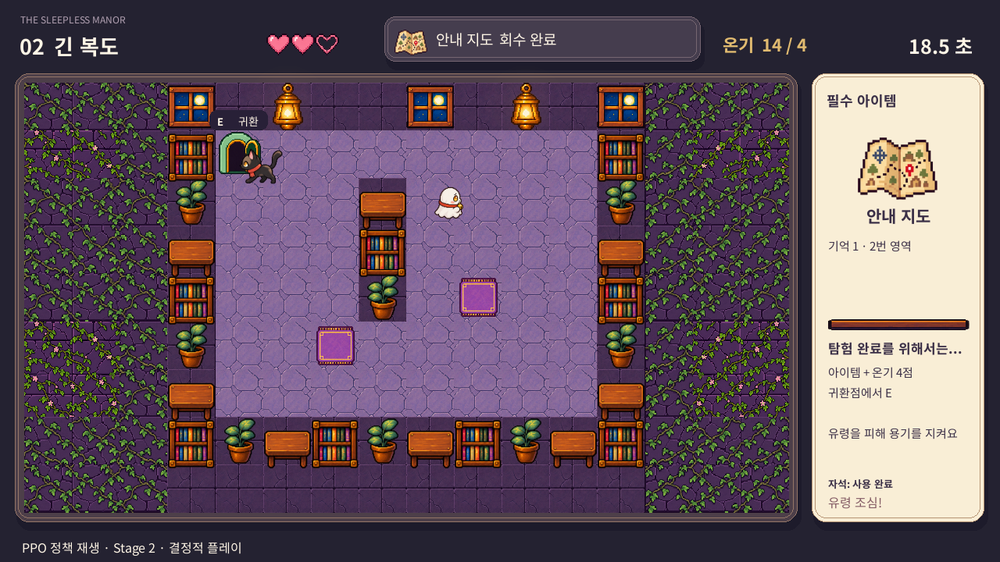

640차원 관측
지형 · 아이템 · 유령 · 시간630
실제 이동 가능 방향4
목표 단계 · 방향 · 온기 조건6
환경과 목표는 별도 신경망 분기로 처리합니다.
이동 정보는 행동 마스크에 사용합니다.

실제 RealtimeMansionEnv · Stage 2 정책 재생 화면
행동: 상·하·좌·우·대기 / 한 번 선택한 행동을 최대 9프레임 유지
01 GAME × REINFORCEMENT LEARNING
실시간 탐사 환경에 상태 관측 · 행동 선택 · 보상 피드백을 연결했습니다.
환경과 목표는 별도 신경망 분기로 처리합니다.
이동 정보는 행동 마스크에 사용합니다.

실제 RealtimeMansionEnv · Stage 2 정책 재생 화면
행동: 상·하·좌·우·대기 / 한 번 선택한 행동을 최대 9프레임 유지
02 LEARNING DESIGN
성공 경험이 부족한 문제를 보상 설계와 단계별 복습으로 풀었습니다.
수집 · 목표 접근 · 별 획득에
긍정적인 피드백
시간 낭비 · 벽막힘 · 피해에는
비용 부여
게임 점수와 학습 보상은 구분
물건 획득을 짧게 연습한 뒤
자석 · 물건 연결 과제로 확장
기존 행동을 함께 복습하며
추가 수집 · 귀환까지 연결
중간 시작 상태와 실제 시작점 평가를 구분
정책망: 다음 행동을 선택
가치망: 앞으로의 보상을 예측
Clipping으로 한 번의 갱신에서
정책이 크게 바뀌는 것을 제한
Stable-Baselines3 PPO에 게임용 정책 연결
코드가 목표 순서와 경유지를 안내하고, 실제 이동·대기 행동은 PPO 정책이 선택합니다.
03 EVALUATION & NEXT STEP
확률적 플레이로 각 100판 평가 · 실패한 판도 별 0개로 평균에 포함
| 평가 대상 | 성공 | 별 3개 | 평균 별 |
|---|---|---|---|
| Stage 1 · 새 시드 | 96% | 95% | 2.87 |
| Stage 2 · 선택 평가 | 96% | 82% | 2.63 |
| Stage 2 · 새 시드 | 97% | 78% | 2.60 |
Stage 1: 보관 모델의 새 시드 평가
Stage 2: 전체 학습 best_model의 선택 평가와 별도 새 시드 검증
위 두 값은 같은 선택 평가 시드 기준입니다.

결정적 플레이 화면 예시 · 95점 · 별 3개 · 피해 1회
위 표의 통계는 확률적 플레이 결과입니다.
검증한 성과: 자석 · 물건 · 추가 수집 · 귀환 연결 / 진행 중: 무피해 귀환 안정화
마무리 학습의 미확인 결과는 성과 수치에 포함하지 않았습니다.